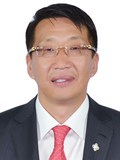

Member of the State Great Khural of Mongolia
Enkhamgalan Luvsantseren
Member of the State Great Khural of Mongolia ENKHAMGALAN Luvsantseren
Mongolian People's Party
Education, graduated schools, education degree:
1977 - 1987 High school in Murun, Khuvsgul province
1987 - 1992 Sankt-Petersburg University (Bachelor in Art) Russia
2000 - 2002 Handong Global University (Master of Business Administration) Ulaanbaatar, Mongolia
Working experience:
1992 - 1995 Editor in Chief, “Il Tovchoo” National weekly newspaper
1995 - 1997 Executive Director, Interpress Company
2000 - 2007 CEO, MCS Electronincs LLC
2002 - 2012 Executive Vice President, MCS Group
2012 - 2016 Member of the State Great Hural (Parliament) of Mongolia
2016 Member of the State Great Hural (Parliament) of Mongolia
2016 Chairman of the Standing Committee on Social Policy, Education, Culture and Science
Awards:
2008 Order of “Polar Star”
2015 Order of "Red Banner of Labour"
Foreign language knowledge:
English; Russian